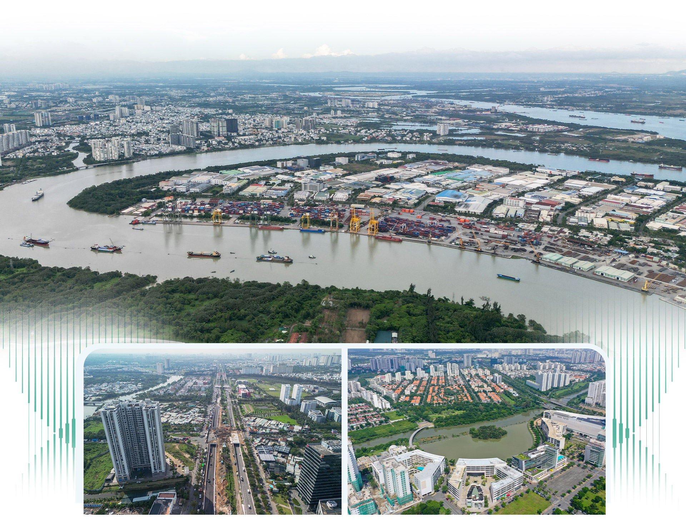
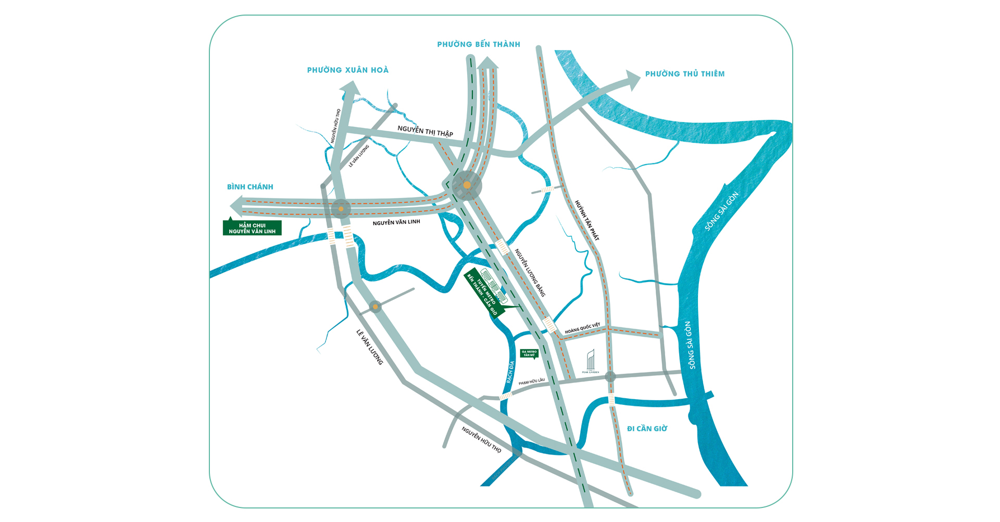
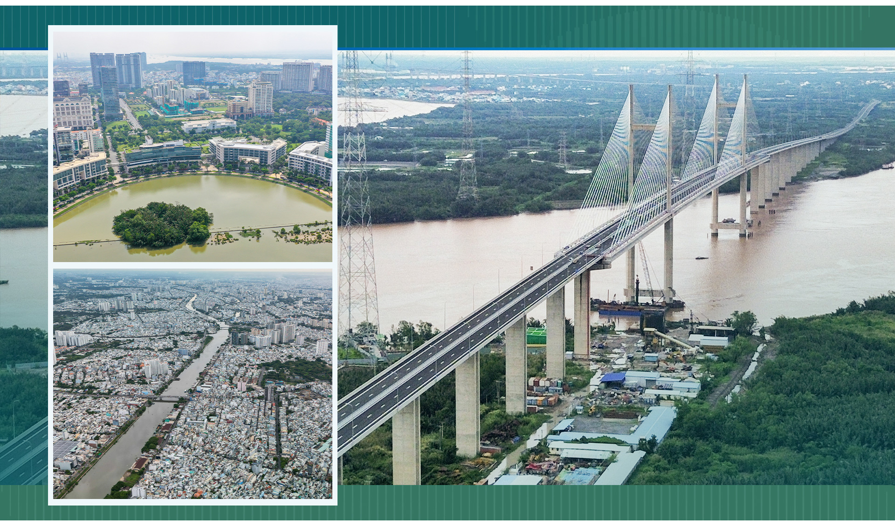
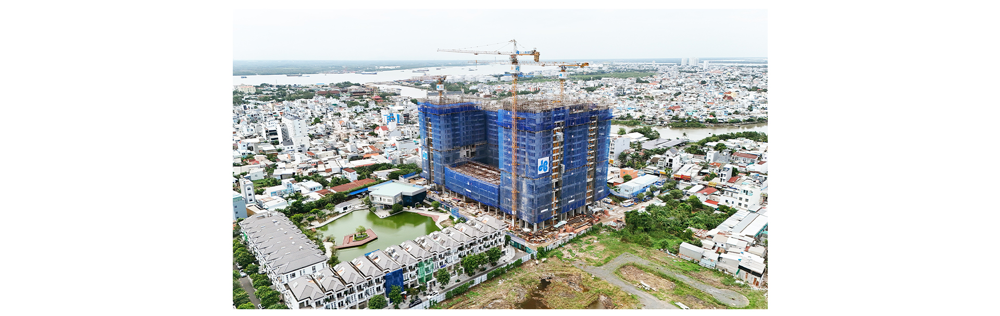
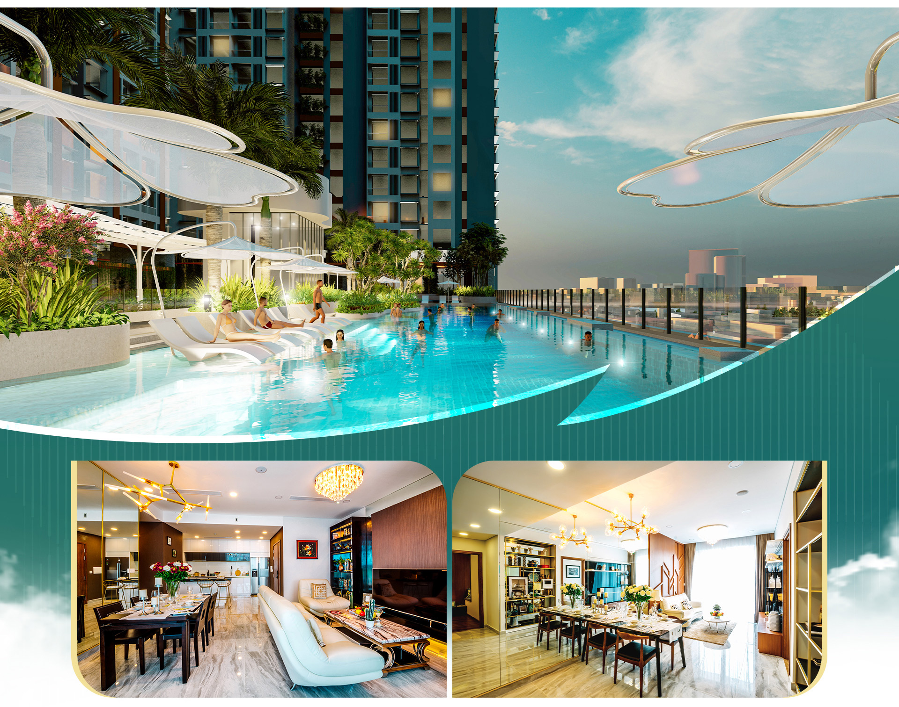

Sau nhiều năm chuẩn bị, khu Nam TP Hồ Chí Minh bước vào giai đoạn nâng cấp hạ tầng, góp phần tăng khả năng kết nối, trợ lực cho thị trường nhà ở.
Tại TP HCM hay các đô thị lớn, hạ tầng là yếu tố tác động tích cực đến sự phát triển của thị trường bất động sản. Đơn cử tại khu Đông, cầu Thủ Thiêm 1, Xa lộ Hà Nội (nay là đường Võ Nguyên Giáp), cao tốc Long Thành – Dầu Giây, metro số 1… góp phần mở rộng không gian đô thị, giúp khu vực này sôi động, dẫn dắt nguồn cung nhiều năm qua.
Với khu Nam, sau giai đoạn có phần “trầm lắng”, khu vực này được dự báo sẽ hấp dẫn hơn khi hạ tầng bước vào giai đoạn đầu tư hàng loạt.
Giai đoạn 2025-2030, hàng loạt công trình trọng điểm sẽ được triển khai hoặc đưa vào vận hành tại khu Nam. Từ các nút giao cửa ngõ, cầu vượt sông cho đến hệ thống đường sắt tốc độ cao. Mỗi công trình góp phần giải quyết một “nút thắt”, để tạo thành mạng lưới giao thông mới, mở rộng đáng kể không gian phát triển của cả khu.
Khởi đầu của chu kỳ này là việc vận hành ổn định hầm chui Nguyễn Văn Linh – Nguyễn Hữu Thọ từ đầu năm 2025. Hầm chui nói trên nằm trên đường Nguyễn Văn Linh gồm hai nhánh, mỗi nhánh dài 456 m, rộng ba làn xe. Dự án có tổng mức đầu tư 830 tỷ đồng. Sau khi cả hai nhánh hầm được đưa vào khai thác điểm ùn tắc nhiều năm ở khu Nam cơ bản được tháo gỡ.
Đây không chỉ là cửa ngõ của Phú Mỹ Hưng, Khu chế xuất Tân Thuận hay Đại học RMIT, mà còn là tuyến giao thông huyết mạch kết nối Nhà Bè với trung tâm TP HCM. Việc lưu thông thông suốt trên trục Nguyễn Văn Linh đã tạo ra tác động tích cực cho kinh tế, đô thị, thuận tiện cho dân sinh.

Bên cạnh hầm chui, TP HCM tiếp tục mở rộng các hướng kết nối mới. Cầu Nguyễn Khoái là một trong những mảnh ghép quan trọng nhất của chiến lược này.
Sau gần một thập kỷ chuẩn bị, dự án chính thức khởi công cuối năm 2025 với tổng vốn hơn 3.700 tỷ đồng và dự kiến hoàn thành vào năm 2027. Khi đưa vào khai thác, cây cầu sẽ tạo thêm tuyến kết nối trực tiếp từ khu Nam vào trung tâm thành phố, giảm áp lực cho cầu Kênh Tẻ và trục Nguyễn Hữu Thọ – những điểm ùn tắc kéo dài nhiều năm. Không chỉ rút ngắn thời gian di chuyển, công trình còn góp phần thay đổi hướng tiếp cận của cả khu vực quận 7 và Nhà Bè (cũ) đối với khu vực lõi đô thị TP HCM.
Khu Nam TP HCM cũng đang sở hữu nhiều dự án hướng đến việc mở thêm những hành lang phát triển liên vùng.

Đơn cử, cầu Phú Mỹ 2 được quy hoạch kết nối trực tiếp khu Nam với Đồng Nai và sân bay quốc tế Long Thành. Cầu dài 6,3 km, điểm đầu giao với đường Nguyễn Hữu Thọ qua các phường Phú Thuận, Tân Mỹ, xã Nhà Bè và kết thúc tại xã Đại Phước (Đồng Nai). Cầu được thiết kế quy mô 8 làn xe (6 làn ôtô và 2 làn hỗn hợp); đường dẫn hai đầu cầu tối thiểu 8 làn xe với hạ tầng kỹ thuật tương ứng.
Trong khi đó, cầu Thủ Thiêm 4 có tổng chiều dài 2,16 km mở hướng kết nối khu Nam với bán đảo Thủ Thiêm. Điểm đầu tại đường Nguyễn Văn Linh, khu vực giao với cầu Tân Thuận 2 (phường Tân Thuận), điểm cuối tại đường Nguyễn Cơ Thạch, thuộc Khu đô thị mới Thủ Thiêm (phường An Khánh).

Theo các chuyên gia, khi cả hai công trình hoàn thành, khu Nam sẽ không còn chỉ kết nối theo hướng Bắc – Nam như hiện nay mà hình thành mạng lưới giao thông đa hướng, liên kết trực tiếp với khu Đông và các trung tâm kinh tế mới.
Không dừng ở mạng lưới đường bộ, khu Nam còn được kỳ vọng hưởng lợi từ dự án đường sắt tốc độ cao Bến Thành – Cần Giờ. Tuyến đường hơn 50 km do Vinspeed đầu tư. Khác với Metro số 1, tuyến đường sắt này được định hướng áp dụng công nghệ đường sắt tốc độ cao 350 km/h, cho phép rút ngắn thời gian di chuyển từ trung tâm TP HCM đến Cần Giờ xuống còn khoảng 15-20 phút.
Dọc tuyến có ba ga Tân Thuận, Tân Mỹ, Nhà Bè đặt tại khu Nam, được đánh giá là cơ hội để hình thành các khu phức hợp TOD trong những năm tới.
Báo cáo 6 tháng đầu năm 2026 của Batdongsan cho biết thị trường bất động sản Việt Nam đang bước sang giai đoạn phát triển bền vững hơn. Thay vì tăng trưởng dựa trên kỳ vọng, dòng tiền ngày càng được dẫn dắt bởi quy hoạch dài hạn, đầu tư hạ tầng, chất lượng sản phẩm và tính minh bạch của thị trường.
Tại TP HCM và Hà Nội, các tuyến metro, đường vành đai hay cao tốc liên vùng đang tái định hình bản đồ phát triển đô thị, kéo theo sự dịch chuyển cả nguồn cung lẫn nhu cầu từ khu vực trung tâm sang các hành lang phát triển mới.
Khảo sát của Batdongsan cho thấy, 67% người được hỏi đánh giá quy hoạch có tác động lớn hoặc rất lớn đến thị trường bất động sản. Quy hoạch trở thành căn cứ quan trọng trong quyết định của người mua cũng như doanh nghiệp phát triển dự án.
65% môi giới cho biết người mua ưu tiên các dự án nằm gần những công trình hạ tầng trọng điểm như ga metro, đường vành đai hoặc các cây cầu lớn. 91% cho rằng khách hàng sẵn sàng trả thêm tiền để sở hữu bất động sản có lợi thế kết nối, trong đó mức chấp nhận phổ biến cao hơn từ 5-10% so với các dự án tương đồng.
Theo các chuyên gia, thời gian di chuyển và khả năng kết nối đang đóng vai trò quan trọng hơn trong bức tranh bất động sản, thay vì khoảng cách địa lý.

Không chỉ thay đổi tiêu chí lựa chọn sản phẩm, người mua nhà cũng ngày càng thận trọng hơn trong quá trình ra quyết định. Các yếu tố như pháp lý, tiến độ triển khai hạ tầng, khả năng kết nối và mức độ minh bạch của dự án được đặt lên hàng đầu. Cùng phân khúc, những dự án đã hoàn thiện hạ tầng, pháp lý rõ ràng và có cộng đồng cư dân hiện hữu ghi nhận sức hấp dẫn cao hơn.
Nhìn từ góc độ nguồn cung, chuyên gia của CBRE Việt Nam cho rằng khu Nam sẽ là điểm sáng của thị trường thời gian tới. Trong báo cáo thị trường quý II/2026, CBRE dự báo nguồn cung mới căn hộ cả năm 2026 tại khu vực TP HCM cũ tăng gấp ba so với năm trước. Khu Nam sẽ đóng vai trò “đầu tàu” với 50% thị phần, vượt khu Đông (30%).

CBRE nhận định khu Nam có dư địa phát triển lớn, giá đất cạnh tranh. Đặc biệt, theo quy hoạch phát triển hạ tầng đến năm 2030, khu vực này sẽ đón nhiều dự án giao thông trọng điểm được triển khai. Đây là lý do các chủ đầu tư có xu hướng đi trước một bước, chuẩn bị quỹ đất và phát triển dự án để đón đầu chu kỳ hạ tầng mới.
“Thị trường tiếp tục xu hướng sàng lọc mạnh hơn. Các dự án có vị trí tốt, chất lượng phát triển cao và được hỗ trợ bởi hạ tầng đồng bộ sẽ là những sản phẩm thu hút dòng tiền hiệu quả nhất”, báo cáo của CBRE đánh giá.